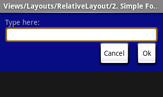

This section describes some of the more common types of layout objects
to use in your applications. Like all layouts, they are subclasses of ViewGroup.
这一节描述了应用程序中经常使用的几种布局类型。所有的布局的类都是ViewGroup的子类。
Also see the Hello Views tutorials for
some guidance on using more Android View layouts.
您也可以参看Hello Views指南获得更多使用Android可视框布局的指导。
FrameLayout is the simplest type of layout
object. It's basically a blank space on your screen that you can
later fill with a single object — for example, a picture that you'll swap in and out.
All child elements of the FrameLayout are pinned to the top left corner of the screen; you cannot
specify a different location for a child view. Subsequent child views will simply be drawn over previous ones,
partially or totally obscuring them (unless the newer object is transparent).
FrameLayout是一种简单的布局类型。简单来说他就是屏幕上一块可以用单一的对象——比如一张要切入切出的图片，进行填充的空白区域。图框布局的子元素只能被放到框的左上角，您不能为子元素指定其他的位置。后边的子元素会绘制到上一张之上，部分或完全覆盖之前的元素（除非后边的子元素是透明的）。
LinearLayout aligns all children in a
single direction — vertically or horizontally, depending on how you
define the orientation attribute. All children are
stacked one after the other, so a vertical list will only have one child per
row, no matter how wide they are, and a horizontal list will only be one row
high (the height of the tallest child, plus padding). A LinearLayout respects margins between children
and the gravity (right, center, or left alignment) of each child.
LinearLayout将所有子元素对齐到一个方向——竖直或水平，根据您对orientation参数的定义。所有子元素依次排列，因此竖直排列不管元素多宽，每行只有一个子元素；水平排列只有一行的高度（最高的子元素加上填充）。LinearLayout允许在子元素之间或元素与gravity
(right, center, or left alignment) ——重力方向（右，中心，或左对齐的边）——之间设置margins——空白。
LinearLayout also supports assigning a
weight to individual children. This attribute assigns an "importance" value to a view,
and allows it to expand to fill any remaining space in the parent view.
Child views can specify an integer weight value, and then any remaining space in the view group is
assigned to children in the proportion of their declared weight. Default
weight is zero. For example, if there are three text boxes and two of
them declare a weight of 1, while the other is given no weight (0), the third text box without weight
will not grow and will only occupy the area required by its content.
The other two will expand equally to fill the space remaining after all three boxes are measured.
If the third box is then given a weight of 2 (instead of 0), then it is now declared
"more important" than both the others, so it gets half the total remaining space, while the first two
share the rest equally.
LinearLayout
还支持为单个子元素分配一个weight。这个属性为可视框分配“importance”值，允许可视框扩展来填充满父可视窗剩余的空间。子可视框可以指定一个整数的重要性值，然后父可视框中剩余的空间会按重要性值的比例分配给子可视框。默认的重要性是零。例如，如果有三个编辑框，其中两个声明重要性为1，另一个没有给出重要性（就是默认的0），没给出值的第三个编辑框不会增大，只会操作其内容需要的大小。另两个会等量的增加以填充安排好这三个框以后还剩下的空间。如果第三个编辑框给定的值是2（而不是0），即他被声明比另两个“更重要”，所以他将获得剩余空间的一半，另两个各获得四分之一。
Tip: To create a proportionate size
layout on the screen, create a container view group object with the
layout_width and layout_height attributes set to fill_parent; assign
the children height or width to 0 (zero); then assign relative
weight values
to each child, depending on what proportion of the screen each should
have.
小贴士：在屏幕上创建一个大小合适的布局，您可以创建一个将layout_width和layout_height设为的可视窗组，将其子可视窗height或 width
设为0（零）；然后为根据您希望的占据的大小每个子可视框分配相对的weight值。
The following two forms represent a LinearLayout with a set of elements: a
button, some labels and text boxes. The text boxes have their width set to fill_parent; other
elements are set to wrap_content. The gravity, by default, is left.
The difference between the two versions of the form is that the form
on the left has weight values unset (0 by default), while the form on the right has
the comments text box weight set to 1. If the Name textbox had also been set
to 1, the Name and Comments text boxes would be the same height.
下面的两个表格表示了具有下列元素的LinearLayout
：一个按钮，几个文本框，几个编辑框。编辑框将其宽度设为fill_parent；按钮和文本框宽度设为wrap_content。重力方向是默认的向左，两个表格的区别在于左边的没有设定重要性值（于是是默认的0），右边的将最下边的编辑框的重要性值设为了1。如果您将上边的编辑框的重要性值也设为1，那么两个编辑框将是等高的。
Within a horizontal LinearLayout, items are aligned by the position of
their text base line (the first line of the first list element — topmost or
leftmost — is considered the reference line). This is so that people scanning
elements in a form shouldn't have to jump up and down to read element text in
neighboring elements. This can be turned off by setting
android:baselineAligned="false" in the layout XML.
在水平的 LinearLayout中，元素根据文字基准线（第一行第一列——最左边或最上边——被认为是文字基准线）的位置进行对齐。这样一来用户检索表格的元素就不用在阅读相邻元素时上下跳转。对齐可以通过向布局文件中加入android:baselineAligned="false"来关闭。
To view other sample code, see the
Hello LinearLayout tutorial.
更多示例代码，参见Hello LinearLayout指南。
TableLayout positions its children into rows
and columns. TableLayout containers do not display border lines for their rows, columns,
or cells. The table will have as many columns as the row with the most cells. A table can leave
cells empty, but cells cannot span columns, as they can in HTML.
TableLayout将子元素安排进行和列中。表格布局容器不会行和列或单元格的边线。表格的的列数取决于具有最多单元格的行。表格可以将某个单元格留空，但是单元格不可以像HTML中那样跨越几个列。
TableRow objects are the child views of a TableLayout
(each TableRow defines a single row in the table).
Each row has zero or more cells, each of which is defined by any kind of other View. So, the cells of a row may be
composed of a variety of View objects, like ImageView or TextView objects.
A cell may also be a ViewGroup object (for example, you can nest another TableLayout as a cell).
TableRow对象是TableLayout
的子元素（每一个TableRow定义了表格的一行）。每一个行可以有任意个（没有也可）单元格，每一个单元格可定义为任意一种除单元格之外的可视框。因此一行可能由不同种类的可视框填充的单元格组成，比如图片或文本
可视框对象。一个单元格也可以是一个可视框组对象（比如可以是嵌套的其他TableLayout）。
The following sample layout has two rows and two cells in each. The accompanying screenshot shows the
result, with cell borders displayed as dotted lines (added for visual effect).
下面的示例布局具有两行，每行两个单元格。旁边的截图显示了结果，单元格的边界由虚线表示（为了明显后期加上去的）。
<?xml version="1.0" encoding="utf-8"?>
<TableLayout xmlns:android="http://schemas.android.com/apk/res/android"
android:layout_width="fill_parent"
android:layout_height="fill_parent"
android:stretchColumns="1">
<TableRow>
<TextView
android:text="@string/table_layout_4_open"
android:padding="3dip" />
<TextView
android:text="@string/table_layout_4_open_shortcut"
android:gravity="right"
android:padding="3dip" />
</TableRow>
<TableRow>
<TextView
android:text="@string/table_layout_4_save"
android:padding="3dip" />
<TextView
android:text="@string/table_layout_4_save_shortcut"
android:gravity="right"
android:padding="3dip" />
</TableRow>
</TableLayout>
|
 |
Columns can be hidden, marked to stretch and fill the available screen space,
or can be marked as shrinkable to force the column to shrink until the table
fits the screen. See the TableLayout reference
documentation for more details.
列可以隐藏、标记为可伸展以填充可用的屏幕空间、标记为 可收缩以适应屏幕。参见TableLayout reference文档获得更多详细信息。
To view sample code, see the Hello
TableLayout tutorial.
示例代码，参见Hello
TableLayout指南。
RelativeLayout lets child views specify their
position relative to the parent view or to each other (specified by ID). So you can
align two elements by right border, or make one below another, centered in
the screen, centered left, and so on. Elements are rendered in the order given, so if the first element
is centered in the screen, other elements aligning themselves to that element
will be aligned relative to screen center. Also, because of this ordering, if using XML to specify this layout,
the element that you will reference (in order to position other view objects) must be listed in the XML
file before you refer to it from the other views via its reference ID.
RelativeLayout允许子元素指定相对父可视框或其他子元素（通过ID指定）的相对位置。用相对布局您可以让两个元素右边界对齐，或让一个在另一个下边，在屏幕的中央，中间并贴左边界，等等。元素会根据你的指定进行安排，因此如果第一个元素在屏幕中央，其他元素被设定为与之对齐，则其他元素就是相当于屏幕中央对齐。而且，由于这种相对的安排，如果使用XML进行布局设定，在从其他可视框使用ID进行引用（为了作为位置参考）之前，引用的元素必须是在XML文件中已经列出。
The example below shows an XML file and the resulting screen in the UI.
Note that the attributes that refer to relative elements (e.g., layout_toLeft)
refer to the ID using the syntax of a relative resource
(@id/id).
下边的例子展示了XML文件以及其结果的屏幕截图。注意，表示相对元素的属性（比如，layout_toLeft）的引用要使用资源的引用语法（@id/id）。
<?xml version="1.0" encoding="utf-8"?>
<RelativeLayout xmlns:android="http://schemas.android.com/apk/res/android
android:layout_width="fill_parent"
android:layout_height="wrap_content"
android:background="@drawable/blue"
android:padding="10px" >
<TextView android:id="@+id/label"
android:layout_width="fill_parent"
android:layout_height="wrap_content"
android:text="Type here:" />
<EditText android:id="@+id/entry"
android:layout_width="fill_parent"
android:layout_height="wrap_content"
android:background="@android:drawable/editbox_background"
android:layout_below="@id/label" />
<Button android:id="@+id/ok"
android:layout_width="wrap_content"
android:layout_height="wrap_content"
android:layout_below="@id/entry"
android:layout_alignParentRight="true"
android:layout_marginLeft="10px"
android:text="OK" />
<Button android:layout_width="wrap_content"
android:layout_height="wrap_content"
android:layout_toLeftOf="@id/ok"
android:layout_alignTop="@id/ok"
android:text="Cancel" />
</RelativeLayout>
|
 |
Some of these properties are supported directly by
the element, and some are supported by its LayoutParams member (subclass RelativeLayout
for all the elements in this screen, because all elements are children of a RelativeLayout
parent object). The defined RelativeLayout parameters are: width, height,
below, alignTop, toLeft, padding[Bottom|Left|Right|Top],
and margin[Bottom|Left|Right|Top]. Note that some of these parameters specifically support
relative layout positions — their values must be the ID of the element to which you'd like this view laid relative.
For example, assigning the parameter toLeft="my_button" to a TextView would place the TextView to
the left of the View with the ID my_button (which must be written in the XML before the TextView).
有些属性是元素直接支持的，有些是由他的LayoutParams成员支持的（屏幕中的元素的RelativeLayout子类，因为所有的元素是RelativeLayout父对象的子类）。RelativeLayout的参数有：width, height,
below, alignTop, toLeft, padding[Bottom|Left|Right|Top],
和margin[Bottom|Left|Right|Top]。注意有些参数指定相对的位置——他们的值必须是你作为位置参照物的ID。例如，分配给文本框一个toLeft="my_button"属性会使得这个文本框被安排在ID为 my_button的可视框（必须在XML文件的TextView定义之前定义）的左边。
To view this sample code, see the Hello
RelativeLayout tutorial.
示例代码，请参见Hello
RelativeLayout指南。
These objects all hold child UI elements. Some provide their own form of a visible UI, while others
are invisible structures that only manage the layout of their child views.
这些对象都可以承载子UI元素。有些提供自己的可见UI的形式，有些是不可见的，只是组织子可视框结构。
| Class——类 | Description——描述 |
|---|---|
FrameLayout |
Layout that acts as a view frame to display
a single object. 一个画框，显示单一对象 |
Gallery |
A horizontal scrolling display of images, from a bound list. 从一个列表中显示图片，水平方向可划屏。 |
GridView |
Displays a scrolling grid of m columns and n rows. 显示m列n行的可划屏网格。 |
LinearLayout |
A layout that organizes its children into a single horizontal or vertical
row. It creates a scrollbar if the length of the window exceeds the length
of the screen. 将子元素组织为一行或一列。如果长度超过屏幕，会显示一个滚动条。 |
ListView |
Displays a scrolling single column list. 显示一个可划屏的单一列的列表。 |
RelativeLayout |
Enables you to specify the location of child objects relative to each
other (child A to the left of child B) or to the parent (aligned to the
top of the parent). 允许您指定子对象间的相对位置（比如 子A在子B的左边），或者子与父的相对位置（将子对齐到父的顶边）。 |
ScrollView |
A vertically scrolling column of elements. 竖直方向可划屏的一列元素。 |
Spinner |
Displays a single item at a time from a bound list, inside a one-row
textbox. Rather like a one-row listbox that can scroll either horizontally
or vertically. 在一个一行的编辑框，从一个列表中一次显示一个项目。像一行的可水平或竖直滚动的列表。 |
SurfaceView |
Provides direct access to a dedicated drawing surface. It can hold child
views layered on top of the surface, but is intended for applications
that need to draw pixels, rather than using widgets. 提供到一块专用绘图区域的直接连接。他可以承载在这块区域最顶层的子可视框，但是是供需要直接绘制像素而不是使用控件的应用程序使用的。 |
TabHost |
Provides a tab selection list that monitors clicks and enables the application
to change the screen whenever a tab is clicked. 提供一个标签选择列表，监听单击，并允许应用程序在标签改变时该边屏幕显示。 |
TableLayout |
A tabular layout with an arbitrary number of rows and columns, each cell
holding the widget of your choice. The rows resize to fit the largest
column. The cell borders are not
visible. 一个有任意行列的表格布局，每一个单元格可以装一个控件。行的大小会自动适应最宽的列。单元格边界不可见。 |
ViewFlipper |
A list that displays one item at a time, inside a one-row textbox. It
can be set to swap items at timed intervals, like a slide show. 在一个单行文本框中一次显示一个列表中的项目。可以设定项目自动切换的时间间隔，像幻灯片一样。 |
ViewSwitcher |
Same as ViewFlipper. 同ViewFlipper。 |